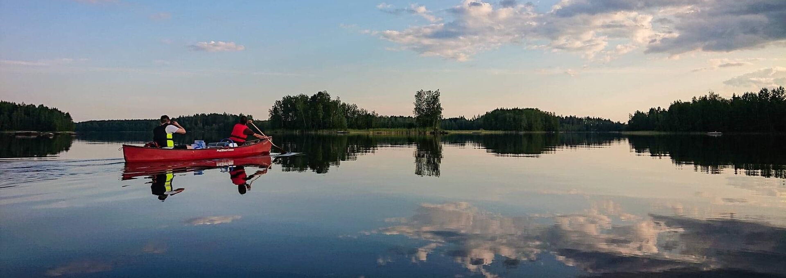

Untuvapussi
- Kevyt ja pakkautuu pieneksi
- Hyvin pidettynä pitkäikäinen
- Arempi kosteudelle
- Kalliimpi

Varusteet
Vinkkejä retkeilyvälineiden ja makuupussin hankintaan.
Varusteet
Hyvät varusteet tekevät retkestä mukavan – mutta kaikkea ei tarvitse hankkia kerralla.
Jounin ainavalmis.fi-blogista löytyy hyviä vinkkejä muun muassa retkeilyvälineiden hankintaan.
Lämmin makuupussi on retkeilijän tärkeimpiä varusteita. Hyvä pussi kannattaa valita täytteen mukaan:
Kannattaa seurailla alennusmyyntejä – laadukkaita makuupusseja on usein tarjolla edullisemmin kauden vaihteessa.